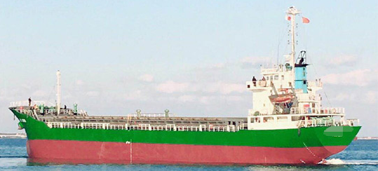

3,470 DWT 1,986 GRT General Cargo Blt 1988 Jp
/ informed by BNC SHIPBROKING CO., LTD.
(18-642)

- TYPE : SINGLE DECK, STL BTM, G’LESS / GENERAL CARGO SHIP
- FLAG/CLASS : SIERRA LEONE / CCS
- BUILT : AUG. 30, 1988, JAPAN
- LOA/L/B/D : 86.8 / 81.5 / 12.8 / 7.2 M
- DWT/draft : 3,470 T / 5.20 M
- GRT/NRT : 1,986 / 1,004 T
- LIGHT WEIGHT TONNAGE : 1,039.6 T
- MAIN ENGINE : NIIGATA 6M28BGT, 736 KW X 350 RPM X 1set
- AUX. ENGINE : WEICHAI WP6, 120 HP X 2set
- GRAIN/BALE : 4,500 / 4,300 m³
- FO CONSUMPTION : IFO 2.1 T/day, MGO 0.2 T/day
- SPEED : 10 kt
- HOLD/HATCH : 2 / 2
- HATCH SIZE : 22.9 X 8.5 m / 23.5 X 8.5 m
- NO CO2 IN HOLD
- NOT BOXED SHAPE
- MOORING WINCH : HYDRAULIC
- TURBO CHARGER : NIIGATA VTR251
- LAST/NEXT SS : MARCH 8, 2016 / DEC. 2020
- LAST/NEXT DD : DEC. 2017 / DEC. 2020
- LOCATION : TRADING CHINA – KOREA RANGE
Information History
- 180820 : She is available for sale.